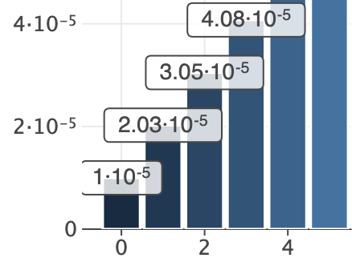
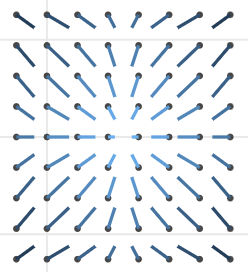
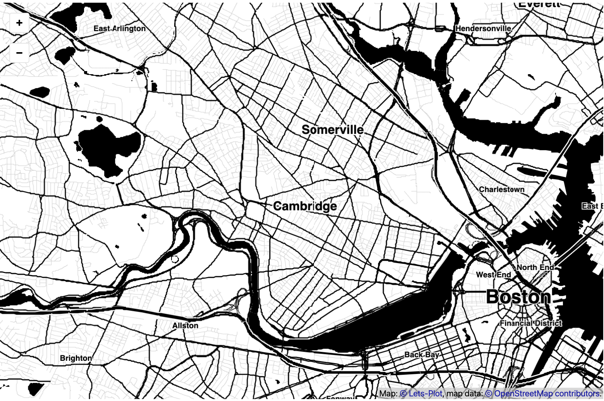

What is new in 4.2.0¶
Support for “Categoricals”
See: example notebook.
Superscript for Numbers in Scientific Notation
Warning
Do NOT(!) use
exponent_format='pow'if you are planning to export plot to a raster format (PNG, PDF).The
CairoSVGlibrary (which is under the hood of ourggsave()function) does not handletspanelement properly end breaks superscript notation when transforming SVG to PNG/PDF.More details: https://github.com/Kozea/CairoSVG/issues/317
See: example notebook.
Exporting Plot to a File-Like Object
Convenience methods:
to_svg(),to_html(),to_png(),to_pdf()See: example notebook.
Sharing of X,Y-scale Limits Between Subplots in gggrid()
See: example notebook.
geom_spoke()
See: example notebook.
High-contrast Tileset “BW” for geom_livemap()
See: example notebook.
See advanced example: Spatial prediction of soil pollutants with multi-output Gaussian processes. Credits: Essi Parent (@essicolo).
Other New Features and Improvements
New variables computed by
'count'and'count2d'statistics:'..sumprop..','..sumpct..'.See: example notebook.
Support using dictionaries for breaks/labels/values customization in
scale_xxx()functions.See: example notebook.
The
lablimparameter inscale_xxx()functions.See: example notebook.
label_textparameter intheme()for annotation text settings.See: example notebook.
NumberFormat: new flag
~to trim trailing zeros.
{kind=link}
{kind=link}
{kind=link}
Change Log¶
See CHANGELOG.md for other changes and fixes.